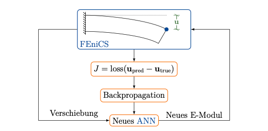
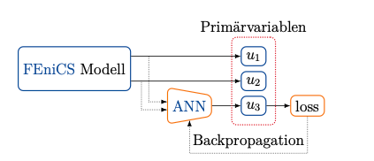

Goal of the project
FEniCS is a framework for Finite Element Method (FEM) developed in collaboration with many research institutes. It is a very useful tool for research purposes because it allows us directly inputting the governing equations and specifying the mesh and function space for simulations. However, it is assumed that the governing equations are completely known, and the equations are often not clear for unknown or very complicated physical phenomena such as chemical reactions and turbulence. Therefore, a method to predict its unknown terms using machine learning was proposed by Mitusch et al.. and others. However, FEniCS uses a dedicated UFL object to represent the function space, and the result of FEniCS calculation cannot be directly passed to PyTorch. Therefore, the development of its interface was required.

Result
FEniCS adjoint has been developed as a framework connecting FEniCS and Python. A class using this adjoint has already been published that specifies a machine learning neural network with its own class and optimizes it using Newton's method. By modifying the function of this class, the data transfer between FEniCS and PyTorch was made possible. Since the learning itself is performed in PyTorch, a wider variety of loss functions and tuning is possible than in the published model.
Prediction of Young's Modulus of Acupuncture
In this example, I predicted the Young's modulus of a "beam" which is deflected by its own weight. A model was created with the displacement of the upper right point of the beam as input and Young's modulus as output. The deflection calculated using the correct Young's modulus was used as the teacher data for training.
The study was done over 300 epochs. The predicted value was 129998.7344 MPa compared to the correct Young's modulus of 100000 MPa. This may be due to the fact that only the self-weight was taken into account and the displacement was very small, which left some error.

Prediction of chemical reaction rates
In this example, chemicals A and B are released from the cylinder. When they touch each other, a chemical reaction occurs depending on their concentration, and produces substance C. The goal was to predict the terms that explain the chemical reaction by replacing them with a neural network. When the concentration of each substance is expressed by \(u_1\), \(u_2\), and \(u_3\) as a trial function, Computational Graph becomes as follows.
The differential equation to be solved here is as follows \(R_{\theta}\left(u_{1}, u_{2}\right)\)is replaced by a neural network or the correct chemical equation.
\begin{align} \frac{\partial u_{1}}{\partial t}+w \cdot \nabla u_{1}-\nabla \cdot\left(\epsilon \nabla u_{1}\right) &= f_{1}-R_{\theta}\left(u_{1}, u_{2}\right) \quad &&\text { in } \Omega \times(0, T)\\ \frac{\partial u_{2}}{\partial t}+w \cdot \nabla u_{2}-\nabla \cdot\left(\epsilon \nabla u_{2}\right) &= f_{2}-R_{\theta}\left(u_{1}, u_{2}\right) \quad &&\text { in } \Omega \times(0, T)\\ \frac{\partial u_{3}}{\partial t}+w \cdot \nabla u_{3}-\nabla \cdot\left(\epsilon \nabla u_{3}\right) &= f_{3}+R_{\theta}\left(u_{1}, u_{2}\right) \quad &&\text { in } \Omega \times(0, T)\\ \frac{\partial u_{i}}{\partial n} &= 0 \quad &&\text { on } \partial \Omega \times(0, T) \end{align}The results are as follows.
The training is strongly dependent on the hyperparameters in order to predict the chemical reaction terms with non-linearity. In the above results, the amount of substance C produced is estimated to be large, but the orders are equal, indicating that the training was performed appropriately.